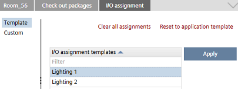

Applying saved I/O assignments
Individual I/O assignments for rooms can be saved in the Details pane of a room, in the I/O assignment tab.
I/O assignment (Details pane)
In the Template view, you can apply a previously saved I/O assignment, or you can reset the I/O assignment to the default I/O assignment of the application template.
To open the Template view, select a room and in the Details pane, open I/O assignment.

Apply a saved I/O assignment
- An I/O assignment is saved in the Custom view.
- In the Details pane of a room, open the I/O assignment tab.
- (Optional) Click Clear all assignments, in order to clear all I/O assignments.
- Select a previously saved I/O assignment from the table.
- Click Apply.
- The selected I/O assignment is applied.

You can view a list of saved I/O assignment templates in Settings > I/O assignment templates.
Apply the default I/O assignment of the application template
- Click Reset to application template.
- The default I/O assignment of the application template is applied.
You can change the default I/O assignment of the application template in Configuration > I/O assignment.